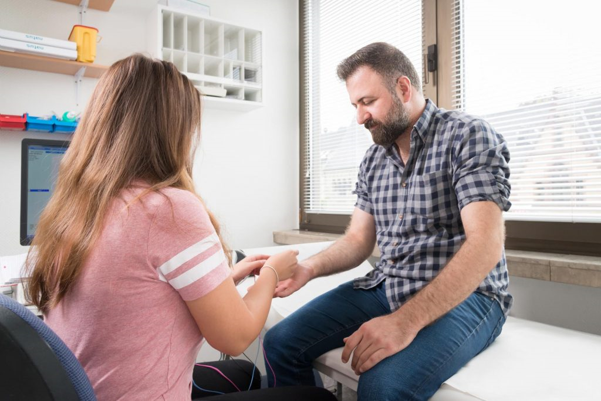
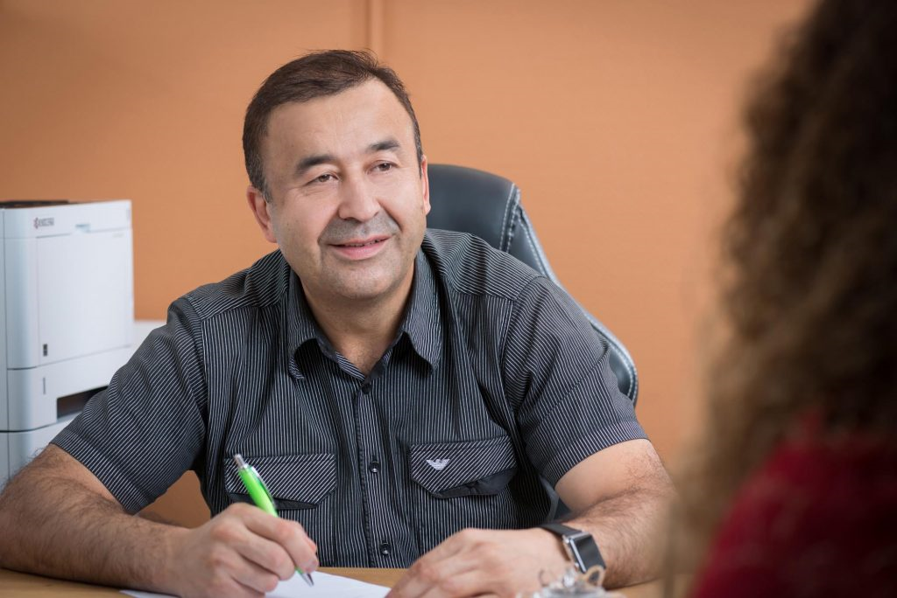
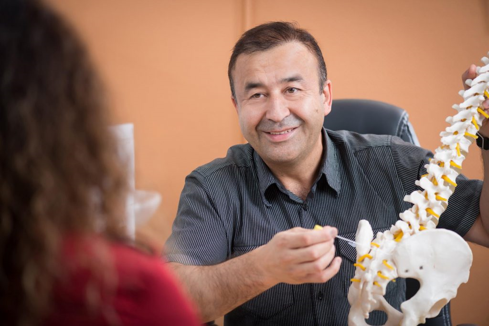
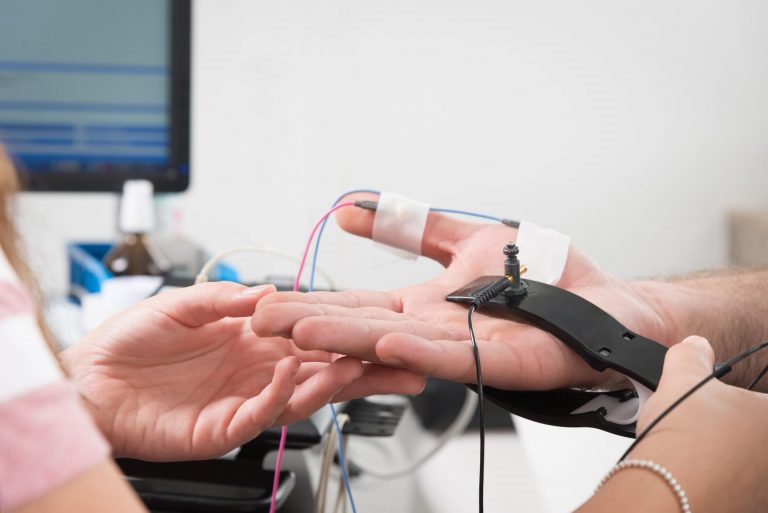

نحن نقدم تشخيصات متقدمة وعلاجًا فعالًا لأمراض الجهاز العصبي المركزي والمحيطي. صحتك هي مهمتنا.

نحن نتعامل مع تشخيص وعلاج أمراض الجهاز العصبي المركزي (CNS) والجهاز العصبي المحيطي (PNS).
يتعلم أكثر →
يمكن أن تتطور الأورام الحميدة أو الخبيثة أيضًا على الأعصاب الطرفية. ومن بين أمور أخرى، نعمل على استئصال الورم بالترددات الراديوية بشكل لطيف.
يتعلم أكثر →
عند علاج الأقراص المنفتقة، فإننا نركز بشكل خاص على الإجراءات اللطيفة ذات الحد الأدنى من التدخل الجراحي.
يتعلم أكثر →
تحتوي الأعصاب الطرفية على ألياف حسية. تؤدي الأمراض إلى الشلل واضطرابات حسية.
يتعلم أكثر →متخصص في جراحة الأعصاب
اتصل بنا على:
0 21 61 / 678 26 83
أرسل لنا رسالة بالبريد الإلكتروني إلى:
kontakt@my-bandscheibe.de
بسمارك شتراسه 106
41061 مونشنغلادباخ
"لقد كنت أتلقى العلاج في مستشفى جراحة الأعصاب فيشر لمدة عامين ولن أذهب إلى أي مكان آخر. وقد شرح لي الفريق كل خطوة من خطوات علاجي بالتفصيل ولم أشعر أبدًا بالضغط. إنها أفضل تجربة طبية حصلت عليها على الإطلاق."
"فريق رائع! بعد إصابتي بالانزلاق الغضروفي، شعرت بعدم الاستقرار الشديد. لقد ساعدني السيد فيشر وفريقه كثيرًا بكفاءتهم وأسلوبهم الهادئ. سارت العملية بسلاسة، وأخيراً شفيت من الألم مرة أخرى."
"شعرت وكأنني في أيدٍ أمينة منذ الدقيقة الأولى. هذه الممارسة حديثة ومنظمة بشكل ممتاز. لقد تأثرت بشكل خاص بالنصيحة التفصيلية والشفافة. لا يسعني إلا أن أوصي بهذه الممارسة للجميع."
اطلب استشارة أولية في أقل من دقيقتين. المواعيد في نفس اليوم ممكنة. نصيحة شفافة، لا مفاجآت.